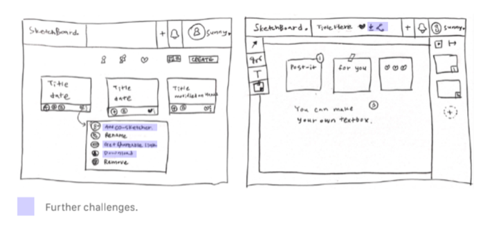
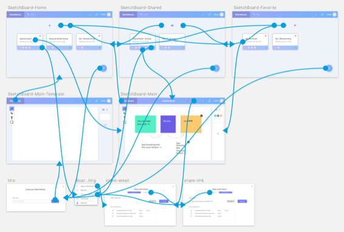
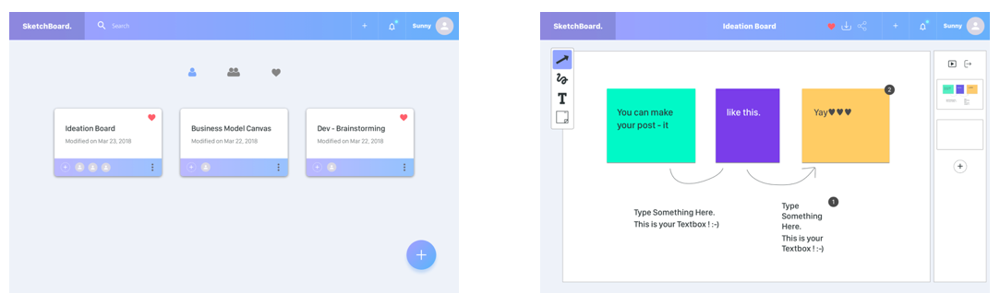

Skills.
Django, HTML/CSS, JavaScript, jQuery, WebSockets, MySQL, Sketch, InVision
Technologies.
#01. WebSocket
+ Full-duplex communication channels over a single TCP connection, which enables users to collaborate on the same canvas in real time.
+ Channel: handles connections and sockets asynchronously and allows WebSockets in Django framework.
#02. WYSIWYG Editor
+ WYSIWYG Editor helps the user to view documents very similar to the end result while the document is being created.
+ We will use WYSIWYG editor to build a web-based word processor, which allows users to
work on the documentation including text, images, and links.
+ Summernote (summernote.org)
+ a JavaScript library that helps users create WYSIWYG editors online.
+ We are planning to use a summernote for the text editor.
#03. P5.js Library
+ P5.js is a JS client-side library for creating graphic and interactive experiences that provides us with a solution for the real-time drawing along with websocket.
#04. Cloud
+ We will deploy the final application on AWS EC2 to store and manage data.
#05. Bootstrap
+ For the front-end part, we will use bootstrap to create a responsive web application.
Product Backlog.
#01. Select
This is the default tool for selecting and moving any object on the board. By hovering not clicking objects, users can check the creator and created time of the object.
#02. Free-Transform
By selecting objects and dragging the mouse, users can resize any object created on the board.
#03. Scribble
By scribbling lines using a pencil, users can collaborate together on the textboxes or sticky notes in real-time. We will use p5.js library for the drawing and WebSockets for the collaboration.
+ draw : Scribble lines using the mouse control.
+ setting
- color : Change the pencil color.
- size : Change the size of pencil.
- eraser : Remove the object.
#04. TextBox
We will use WYSIWYG editor to build a textbox with the styling options for the typography. Currently, we are trying to manipulate the Summernote (https://summernote.org/) API for this.
+ draw : Create the textbox by dragging mouse, which will define the textbox size.
+ setting : font, font size, font color, font style(bold, italic, underline, strikethrough), alignment
+ type : Type texts in the textbox with selected settings.
#05. Sticky note
Users can create the sticky notes to enhance the communication experience. It is similar to the textbox other than having more options to change the background colors and the shape of sticky notes.
+ draw : Create the sticky note by dragging mouse, which will define the textbox size.
+ setting
- font, font size, font color, font style(bold, italic, underline, strikethrough), alignment, list, background color
+ type : Type texts in the sticky note with selected settings.
#06. Comment
By selecting an object, users can add comments on any object. Also, they can view the comments by other collaborators by clicking the number badges on the objects.
#07. Real-time Chatting
Users can chat in real time, which will be implemented using websocket.
Wireframes.
Paper Mock-up
Digital Mock-up
User flows : I worked on paper mockup and digital mockup using Sketch and InVision, which demonstrate how a website or application will look. It helped my team visualize the overall ux and make sure to bethe same page.
Main views : We have 2 main views for the home with the lists of boards, and main board for collaboration.
Development Process.
TextBox Implementation
We tested the textbox implementation using operational transformation, real-time collaboration editing with rich text.
*Operational transformation : a technology for supporting a range of collaboration functionalities in advanced collaborative software systems, which is devised for consistency maintenance and concurrency control in collaborative editing of plain text documents.
Scribble
We implemented real-time collaboration on drawing using node.js. Tested p5.js library with socket.io.
Further Challenges.
Security model
+ We can think about how to deal with the Access Control List.
+ Users can invite other friends by link or email and control differential acess by giving 'can read’, ‘can comment’, ‘can edit’ authority to them.

Multimedia files and link
+ We can improve the collaboration experience by inserting files on the board.
+ Especially, it would be better if users can insert youtube link and play the video directly on the board.
+ For the links of articles or web pages, we can crawl the title and image information and show them in a thumbnail on the board.